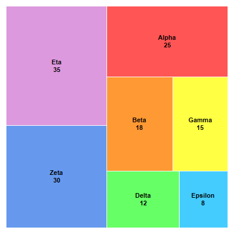

This example demonstrates the basic steps in creating a tree map.
The following is the command line version of the code in "cppdemo/simpletreemap". The MFC version of the code is in "mfcdemo/mfcdemo". The Qt Widgets version of the code is in "qtdemo/qtdemo". The QML/Qt Quick version of the code is in "qmldemo/qmldemo".
#include "chartdir.h"
int main(int argc, char *argv[])
{
// Data for the tree map
double data[] = {25, 18, 15, 12, 8, 30, 35};
const int data_size = (int)(sizeof(data)/sizeof(*data));
// Labels for the tree map
const char* labels[] = {"Alpha", "Beta", "Gamma", "Delta", "Epsilon", "Zeta", "Eta"};
const int labels_size = (int)(sizeof(labels)/sizeof(*labels));
// Colors for the tree map
int colors[] = {0xff5555, 0xff9933, 0xffff44, 0x66ff66, 0x44ccff, 0x6699ee, 0xdd99dd};
const int colors_size = (int)(sizeof(colors)/sizeof(*colors));
// Create a Tree Map object of size 400 x 400 pixels
TreeMapChart* c = new TreeMapChart(400, 400);
// Set the plotarea at (10, 10) and of size 380 x 380 pixels
c->setPlotArea(10, 10, 380, 380);
// Obtain the root of the tree map, which is the entire plot area
TreeMapNode* root = c->getRootNode();
// Add first level nodes to the root.
root->setData(DoubleArray(data, data_size), StringArray(labels, labels_size), IntArray(colors,
colors_size));
// Get the prototype (template) for the first level nodes.
TreeMapNode* nodeConfig = c->getLevelPrototype(1);
// Set the label format for the nodes to show the label and value with 8pt Arial Bold font in
// black color (000000) and center aligned in the node.
nodeConfig->setLabelFormat("{label}<*br*>{value}", "Arial Bold", 8, 0x000000, Chart::Center);
// Set the node fill color to the provided color and the border color to white (ffffff)
nodeConfig->setColors(-1, 0xffffff);
// Output the chart
c->makeChart("simpletreemap.png");
//free up resources
delete c;
return 0;
}
© 2023 Advanced Software Engineering Limited. All rights reserved.